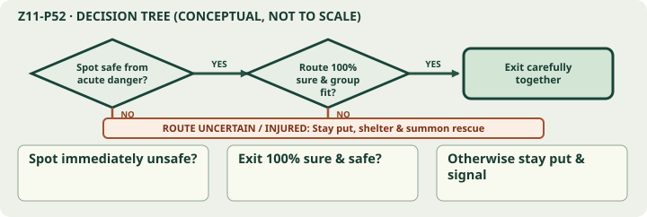

Z11-P52 · Navigation, weather and rescue · Adapted historical material
Decide when staying put beats self-rescue and when immediate danger forces moving
Apply an objective hazard-and-route test to decide between holding position and relocating.
When it applies · Lost, injured, storm-trapped or vehicle-stranded parties facing a stay-or-go dilemma.
Equipment · Map, alert/communication tools, shelter and honest condition check.

Actions
- Ask Question 1 — Is this exact spot immediately dangerous? Active flash flood, wildfire, avalanche runout, falling timber, tidal cutoff or toxic fumes require moving immediately to the nearest safer clear ground.[T06, E04, C19, E23]
- Ask Question 2 — Do we have a 100% verified safe route, adequate daylight, visibility and group health to reach definite safety? Only if every factor is YES should a lost party consider moving out.[T06, N09, E01]
- Whenever the site is safe (or can be made sheltered) and the exit route is uncertain, stay put together—stationary people conserve warmth, avoid injury and are found vastly faster by rescuers.[T06, N09, E05]
Failure recognition · Leaving a safe stranded car or sheltered camp in a blizzard to "walk out for help" along an unverified road, succumbing to hypothermia half a mile away.[E14, T06, N09]
Verify · Answer both stay-or-go questions aloud with the whole group and confirm everyone understands the chosen decision.[T06, N09, ED]
Stop or change course · Any injury preventing safe walking, worsening hypothermia/heat illness, darkness or route uncertainty locks the decision to STAY PUT and signal/call for rescue.[T06, N09, T03, T09]
Evidence and editorial notes
- C19 · FEMA / Ready.gov · Wildfires (current web edition)
- Section: Wildfires > Stay Safe and Smoke Protection · Conditions: Approaching wildfire or heavy smoke in camp or community
Support: Evacuate early along open routes per official orders, protect airways from heavy smoke, and avoid turning back into active fire corridors.
Limitations: Cloth face coverings do not filter fine wildfire smoke particles; fitted particulate respirators or clean indoor air are distinct interventions. · Conflicting evidence: None; coordinates with NWS-WILDFIRE.
Editorial note: Covers wildfire escape and smoke decision thresholds in Z01/Z03. · Specialist reviewer: Emergency management and fire safety
Primary source · checked 2026-11-24 - E01 · Minnesota DNR · Safety in State Forests (current web edition)
- Section: Before your trip and while visiting · Conditions: State-forest travel and backcountry planning
Support: Know the route, check conditions, carry navigation and safety equipment and share trip details.
Limitations: Conditions and trail maintenance vary seasonally across forest units. · Conflicting evidence: None; aligns with NPS-H.
Editorial note: Foundation for trip planning and pre-departure risk checks. · Specialist reviewer: Land management and search and rescue
Primary source · checked 2026-11-24 - E04 · NWS · Flood Safety: Key Points for Camping and Hiking (agency PDF)
- Section: Before and during camping; know your surroundings · Conditions: Stream valleys and runoff channels subject to flash flooding
Support: Choose higher ground away from water channels. Rain far upstream can drive rapid flooding.
Limitations: Dry streambeds and gentle swales can flood rapidly without local rainfall. · Conflicting evidence: None; aligns with NWS-FLOOD.
Editorial note: Core hydrological exclusion rule for shelter placement. · Specialist reviewer: Emergency management and hydrology
Primary source · checked 2026-11-24 - E05 · NWS · What To Do If You're Caught in a Winter Storm (current web edition)
- Section: Outside and find shelter · Conditions: Cold, wet or windy winter conditions
Support: Block wind, stay dry and keep off cold ground. Keep exposure reduction separate from making a fire.
Limitations: Improvised windbreaks do not provide rated thermal protection or snow-load capacity. · Conflicting evidence: None; aligns with CDC-H.
Editorial note: Separates wind, ground, and moisture heat-loss pathways. · Specialist reviewer: Cold-weather shelter specialist
Primary source · checked 2026-11-24 - E14 · NWS · What To Do If You're Caught in a Winter Storm (current web edition)
- Section: In vehicles during a winter storm · Conditions: Vehicle stranded in winter weather with no immediate vehicle hazard
Support: Stay with the vehicle if a safe nearby destination is not obvious. Make the vehicle visible and notify others when possible.
Limitations: Snow-blocked exhaust pipes create rapid lethal CO hazards if an engine is run. · Conflicting evidence: None; keeps shelter decision distinct from idling engine advice.
Editorial note: Used for stranded-vehicle shelter and exhaust-hazard checks. · Specialist reviewer: Winter response and carbon monoxide safety
Primary source · checked 2026-11-24 - E23 · National Avalanche Center / USFS · Avalanche Encyclopedia (current web edition)
- Section: Avalanche Encyclopedia > Terrain, Slopes, and Runout Zones · Conditions: Winter travel and camping in snowy sloped or mountain terrain
Support: Avalanches can initiate on slopes roughly 30 to 45 degrees and travel far into flatter runout zones below; avoid camping beneath steep snow slopes, cornices, or gullies without formal avalanche training and current forecasts.
Limitations: Gentle flat valley floors can still sit inside runout paths beneath steeper upper slopes. · Conflicting evidence: None; strictly excludes unvalidated snow-shelter placement in avalanche terrain.
Editorial note: Enforces avalanche-terrain exclusion on all winter shelter cards. · Specialist reviewer: Avalanche safety and winter shelter
Primary source · checked 2026-11-24 - N09 · NPS · Outdoor Emergency Plan (current web edition)
- Section: If You Get Lost; Seek help · Conditions: Lost hiker who cannot safely retrace steps and has sought rescue
Support: Report last known location and landmarks. Stay put while awaiting help unless an immediate threat requires getting to safety.
Limitations: Navigation, signaling method and safe movement depend on site and responder instructions. · Conflicting evidence: See A02 claim audit for boundaries.
Editorial note: Core evidence for lost-person psychology, signaling and SAR coordination cards. · Specialist reviewer: Search and rescue
Primary source · checked 2026-11-24 - T03 · CDC · Preventing Hypothermia (current web edition)
- Section: Warning signs; What to do · Conditions: Cold exposure and suspected hypothermia
Support: Confusion, slurred speech and drowsiness are warning signs. Obtain medical attention and protect from further cold.
Limitations: Shivering may stop as hypothermia worsens; absence of shivering is not reassurance. · Conflicting evidence: None; aligns with WMS cold guidelines.
Editorial note: Core neurological red-flag trigger for stopping activity and calling rescue. · Specialist reviewer: Wilderness medicine
Primary source · checked 2026-11-24 - T06 · NPS · Outdoor Emergency Plan (current web edition)
- Section: If you get lost or hurt; call for help · Conditions: Outdoor US emergency
Support: Communicate location, last known point, situation and needs. Stay put when unable to establish a safe route unless immediate danger requires movement.
Limitations: Cell signal is unreliable in backcountry terrain; pre-trip plans bridge communication gaps. · Conflicting evidence: None; core lost-person decision rule.
Editorial note: Foundation for stay/signal/move and dispatch handoff cards. · Specialist reviewer: Search and rescue
Primary source · checked 2026-11-24 - T09 · CDC NIOSH · Heat-related Illnesses (current web edition)
- Section: Heat stroke > Symptoms and First aid · Conditions: Suspected heat stroke after exertion or heat exposure
Support: Confusion, slurred speech or loss of consciousness can indicate heat stroke. Call 911 and cool the person promptly.
Limitations: Exertional heat stroke can occur even in moderate ambient temperatures during heavy effort. · Conflicting evidence: None; aligns with T05.
Editorial note: Triggers immediate emergency call and cooling stop condition. · Specialist reviewer: Emergency and wilderness medicine
Primary source · checked 2026-11-24
Source lineage · NPS emergency plan and B012-P26; new manuscript · Classification · Adapted historical material.